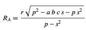

El punto de Gergonne y la circunferencia de Adams
El punto de Gergonne del △ABC es el punto en que se cortan los tres segmentos que unen cada vértice con el punto de contacto de la circunferencia inscrita con el lado opuesto. Avanza con los controles de la línea inferior hasta que aparezca el punto de Gergonne Ge.
Estos tres segmentos se cortan en un punto, porque al ser iguales las longitudes de las tangentes desde un punto a una circunferencia, se tiene que:
AE = AF, BF = BD, CD = CE
y se cumple trivialmente el teorema de Ceva:
(AF/FB)·(BD/DC)·(CE/EA) = 1
Al △DEF se le llama triángulo de Gergonne o triángulo de contacto interior. El punto de Gergonne de △ABC es el punto de Lemoine de △DEF.
Los seis puntos en que las rectas paralelas a los lados del triángulo de Gergonne cortan a los lados del △ABC, se hallan situados en la Circunferencia de Adams cA, concéntrica con la circunferencia inscrita ci.
¿El punto de Gergonne puede ser exterior al triángulo?
¿La circunferencia de Adams es siemprre mayor que la inscrita?
En un triángulo equilátero, ¿cuanto médira su radio si el de la inscrita es igual a 1?
La expresión de su radio es algo complicada:

donde s = (a + b + c)/2, p = a·b + a·c + b·c y r es el radio de la circunferencia inscrita.
Ignacio Larrosa Cañestro (Grupo XeoDin), 7 diciembre 2016. Creado con GeoGebra
Página principal
|